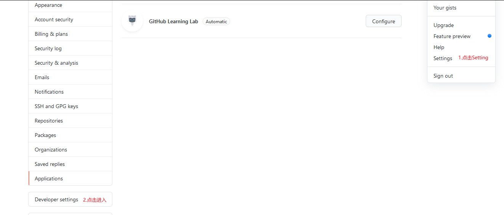
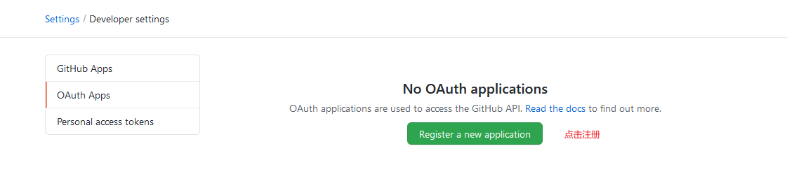
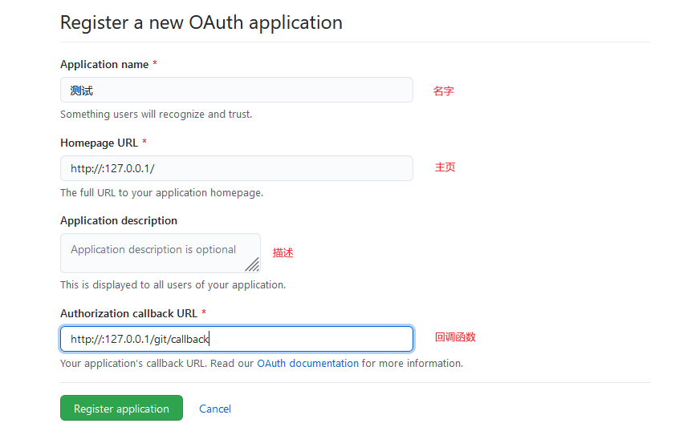
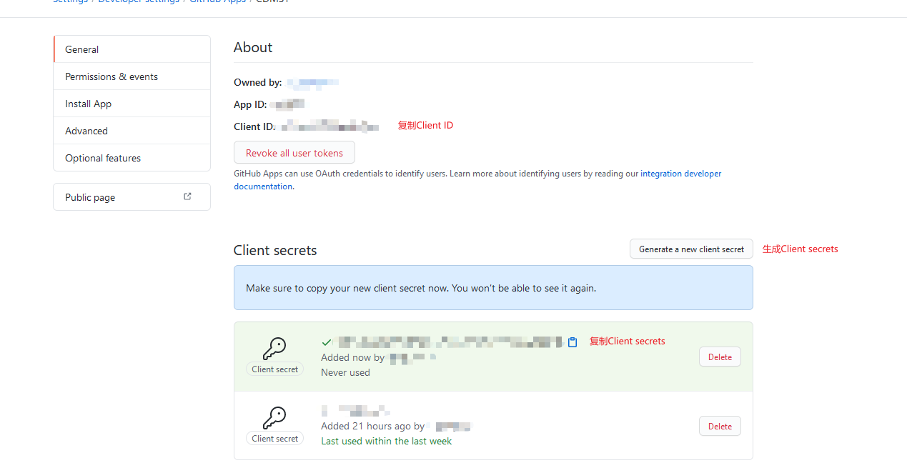

引入第三方登入
1：在第三方应用处申请Client ID和Client secrets 2：回调函数拿code
3：根据code拿令牌
4：根据令牌拿用户数据
git登入
在git申请
1.在git的Settings的Developer settings里创建一个应用申请

2.网站用OAuth Apps

3.注意这里的主页地址是要已经在网上发布的地址（如果是本地测试可以用GitHub Apps一样填法）

4.申请好后，在这里可以看自己的Client ID和Client secrets

SpringBoot里使用
1.先要向git发起请求，git收到请求发送code到指定的回调函数里
2.然后带code发起get请求，向git拿令牌
3.拿令牌向git发起get请求（这里最新是将token令牌放到头文件【Authorization:token 令牌】里发送，有空格这里），拿用户信息
控制层代码
@Controller
public class GitController {
@GetMapping("/")
public String index(){
return "index";
}
@GetMapping("/login")
public String login(Model model){
model.addAttribute("success","成功登入");
return "login";
}
@GetMapping("/gitlogin")
public String Gitlogin(HttpSession session){
//随机uuid,用于第三方应用防止CSRF攻击
String uuid= UUID.randomUUID().toString().replaceAll("-","");
session.setAttribute("state",uuid);
//向git请求code
String gitlogin="https://github.com/login/oauth/authorize?"; //固定的
String client_id="client_id="+"填自己的Client ID"; //自己修改
String callback="填自己的回调地址"; //自己修改
String redirect="&redirect_uri="+ URLEncoder.encode(callback); //将回调地址转换怕有中文
String url=gitlogin+client_id+redirect+"&state="+uuid;
return "redirect:" + url; //服务器发请求
}
@RequestMapping ("/callback")
public String callback(String code, //服务器带个code
String state, Model model,
HttpServletResponse response
) throws Exception {
String client_id="填自己的Client ID"; //自己修改
String key="填自己的Client secrets"; //自己修改
String callback="http://127.0.0.1:8080/callback"; //自己修改（填自己的回调地址）
String codeurl="https://github.com/login/oauth/access_token?client_id="; //固定的
String token;
String userinfo_url;
Map<String, String> responseMap;
String responseStr;
String setcode=codeurl+client_id+"&client_secret="+key+"&code=CODE&redirect_uri="+callback+"";
if(!StringUtils.isEmpty(code)&&!StringUtils.isEmpty(state)) {
//将传来的code设置上
String token_url = setcode.replace("CODE", code); //设置带code的url去请求令牌token
//去git那请求令牌
//拿code去请求令牌
responseStr= HttpClientUtils.doGet(token_url);
//解析拿到的代码取出token令牌
Map<String, String> map = new HashMap<>();
// 以&来解析字符串
String[] result = responseStr.split("\\&");
for (String str : result) {
// 以=来解析字符串
String[] split = str.split("=");
// 将字符串存入map中
if (split.length == 1) {
map.put(split[0], null);
} else {
map.put(split[0], split[1]);
}
}
token = map.get("access_token"); //拿到token令牌
//根据token发送请求获取登录人的信息 ，通过令牌去获得用户信息
userinfo_url = "https://api.github.com/user"; //固定url
//根据令牌向git发起请求拿其用户信息（用HttpClientUtils.doGet2处理后面有）
responseStr= HttpClientUtils.doGet2(userinfo_url,token);//json存储的用户信息
//用户信息转为map（含有用户信息）
responseMap = HttpClientUtils.getMapByJson(responseStr);
System.out.println(responseMap.get("node_id"));//node_id,用来唯一标识用户
/***
//这些通过responseMap.get能取到git其它信息
node_id 用来唯一标识用户
avatar_url github头像URL
created_at 最后更新github时间
login github名
html_url 用户首页
node_id 账号唯一标识
public_repos 公有仓库数量
login 账号名
subscriptions_url 仓库详细信息
updated_at 最后更新github时间
id github账号id
received_events_url 操作详细信息url
**/
received_events_url
//成功就显示
return "redirect:/login";
}
//失败回首页
return "redirect:/index";
}
}
HttpClientUtils.doGet2和getMapByJson代码
package com.xiao.demo.util;
import com.alibaba.fastjson.JSONObject;
import org.apache.http.HttpEntity;
import org.apache.http.client.methods.CloseableHttpResponse;
import org.apache.http.client.methods.HttpGet;
import org.apache.http.impl.client.CloseableHttpClient;
import org.apache.http.impl.client.HttpClients;
import org.apache.http.util.EntityUtils;
import java.util.HashMap;
import java.util.Map;
/**
* @author : xsh
* @create : 2020-03-10 - 15:07
* @describe: 第三方登陆工具类
*/
public class HttpClientUtils {
/**
* 发送get请求，利用java代码发送请求
* @param url
* @return
* @throws Exception
*/
/**
* 发送get请求，利用java代码发送请求
* @param url
* @return更新了只能将token放头文件里
* @throws Exception
*/
public static String doGet2(String url,String Token) throws Exception{
CloseableHttpClient httpclient = HttpClients.createDefault();
HttpGet httpGet = new HttpGet(url);
httpGet.addHeader("Authorization","token "+Token);
// 发送了一个http请求
CloseableHttpResponse response = httpclient.execute(httpGet);
// 如果响应200成功,解析响应结果
if(response.getStatusLine().getStatusCode()==200){
// 获取响应的内容
HttpEntity responseEntity = response.getEntity();
return EntityUtils.toString(responseEntity);
}
return null;
}
/**
* 将字符串转换成map
* @param responseEntity
* @return
*/
public static Map<String,String> getMap(String responseEntity) {
Map<String, String> map = new HashMap<>();
// 以&来解析字符串
String[] result = responseEntity.split("\\&");
for (String str : result) {
// 以=来解析字符串
String[] split = str.split("=");
// 将字符串存入map中
if (split.length == 1) {
map.put(split[0], null);
} else {
map.put(split[0], split[1]);
}
}
return map;
}
/**
* 通过json获得map
* @param responseEntity
* @return
*/
public static Map<String,String> getMapByJson(String responseEntity) {
Map<String, String> map = new HashMap<>();
// 阿里巴巴fastjson 将json转换成map
JSONObject jsonObject = JSONObject.parseObject(responseEntity);
for (Map.Entry<String, Object> entry : jsonObject.entrySet()) {
String key = entry.getKey();
// 将obj转换成string
String value = String.valueOf(entry.getValue()) ;
map.put(key, value);
}
return map;
}
}
qq登入
在qq申请
在这个网站申请qq登入：
https://connect.qq.com/index.html
可参考这个
https://blog.csdn.net/qq_25615395/article/details/80251094
完善资料后申请app ID和app key
在springboot里使用
1.先要向qq发起请求，qq收到请求发送code到指定的回调函数里
2.拿code向qq申请token
3.拿到token向qq申请(申请时要填写自己上传的回调函数)对应用户的openid（多一步）
4.通过openid和token向qq拿用户信息 openid–（用来唯一标识qq用户）
qq控制层代码
@Controller
public class QQController {
@GetMapping("/qqlogin")
public String qqlogin(HttpSession session){
String backUrl = "自己申请的回调地址"; //QQ互联中的回调地址
String app_id="&client_id=" + "自己的app_id"; //自己的appid
//用于第三方应用防止CSRF攻击
String uuid = UUID.randomUUID().toString().replaceAll("-","");
session.setAttribute("state",uuid);
//Step1：获取Authorization Code
String url = "https://graph.qq.com/oauth2.0/authorize?response_type=code"+ //固定的
app_id+ //自己的appid
+"&redirect_uri=" + URLEncoder.encode(backUrl) + //回调地址
"&state=" + uuid;
return "redirect:" + url;
}
/**
* QQ回调
* @param request
* @return
*/
@GetMapping("/qq/callback")
public String qqcallback(HttpServletRequest request, HttpServletResponse response,String code//服务器带的code
) throws Exception {
HttpSession session = request.getSession();
String uuid = (String) session.getAttribute("state");
String http="http://xxxx.com"; //自己的网站（上传时填写的）
String APPID="xxxxxxxxx"; //自己的appid
String APPKEY="XXXXXXXX"; //自己的appkey
String backUrl = http + "/qq/callback"; //上传时填写的回调地址
String state = request.getParameter("state"); //自定义验证码
if(uuid != null){
if(!uuid.equals(state)){
System.out.println("QQ,state错误");
}
}
//Step2：通过Authorization Code获取Access Token令牌
String url = "https://graph.qq.com/oauth2.0/token?grant_type=authorization_code"+
"&client_id=" + APPID +
"&client_secret=" + APPKEY +
"&code=" + code +
"&redirect_uri=" + backUrl;
//拿到token
String access_token = QQHttpClient.getAccessToken(url);
//Step3: 获取回调后的 openid (用来唯一标识qq用户)值
url = "https://graph.qq.com/oauth2.0/me?access_token=" + access_token;
//用令牌去拿用户id
String openid = QQHttpClient.getOpenID(url);
//Step4：获取QQ用户信息
url = "https://graph.qq.com/user/get_user_info?access_token=" + access_token +
"&oauth_consumer_key="+APPID +
"&openid=" + openid;
//通过令牌拿到用户信息
JSONObject jsonObject = QQHttpClient.getUserInfo(url);
//也可以放到Redis和mysql中
//openid,用来唯一标识qq用户
//removeNonBmpUnicode((String)jsonObject.get("nickname")); //QQ名，去除网名中的特殊表情
//(String)jsonObject.get("figureurl_qq"); //QQ头像URL
//(String)jsonObject.get("gender"); //性别
//(String)jsonObject.get("year"); //年龄
//(String)jsonObject.get("province"); //省
//(String)jsonObject.get("city"); //城市
return "";//成功就登入它
}
/**
* 处理掉QQ网名中的特殊表情
* @param str
* @return
*/
public String removeNonBmpUnicode(String str) {
if (str == null) {
return null;
}
str = str.replaceAll("[^\\u0000-\\uFFFF]", "");
if ("".equals(str)) {
str = "(* _ *)";
}
return str;
}
}
QQHttpClient
package com.xiao.demo.util;
import com.alibaba.fastjson.JSONObject;
import org.apache.http.HttpEntity;
import org.apache.http.HttpResponse;
import org.apache.http.client.methods.HttpGet;
import org.apache.http.impl.client.CloseableHttpClient;
import org.apache.http.impl.client.HttpClients;
import org.apache.http.util.EntityUtils;
import java.io.IOException;
/**
* @author xsh
* @create 2020-03-02 20:32
* QQ工具类（主要用于解析QQ返回的信息）
*/
public class QQHttpClient {
private static JSONObject parseJSONP(String jsonp){
int startIndex = jsonp.indexOf("(");
int endIndex = jsonp.lastIndexOf(")");
String json = jsonp.substring(startIndex + 1,endIndex);
return JSONObject.parseObject(json);
}
//qq返回信息：access_token=FE04************************CCE2&expires_in=7776000&refresh_token=88E4************************BE14
public static String getAccessToken(String url) throws IOException {
CloseableHttpClient client = HttpClients.createDefault();
String token = null;
HttpGet httpGet = new HttpGet(url);
HttpResponse response = client.execute(httpGet);
HttpEntity entity = response.getEntity();
if(entity != null){
String result = EntityUtils.toString(entity,"UTF-8");
if(result.indexOf("access_token") >= 0){
String[] array = result.split("&");
for (String str : array){
if(str.indexOf("access_token") >= 0){
token = str.substring(str.indexOf("=") + 1);
break;
}
}
}
}
httpGet.releaseConnection();
return token;
}
//qq返回信息：callback( {"client_id":"YOUR_APPID","openid":"YOUR_OPENID"} ); 需要用到上面自己定义的解析方法parseJSONP
public static String getOpenID(String url) throws IOException {
JSONObject jsonObject = null;
CloseableHttpClient client = HttpClients.createDefault();
HttpGet httpGet = new HttpGet(url);
HttpResponse response = client.execute(httpGet);
HttpEntity entity = response.getEntity();
if(entity != null){
String result = EntityUtils.toString(entity,"UTF-8");
jsonObject = parseJSONP(result);
}
httpGet.releaseConnection();
if(jsonObject != null){
return jsonObject.getString("openid");
}else {
return null;
}
}
//qq返回信息：{ "ret":0, "msg":"", "nickname":"YOUR_NICK_NAME", ... }，为JSON格式，直接使用JSONObject对象解析
public static JSONObject getUserInfo(String url) throws IOException {
JSONObject jsonObject = null;
CloseableHttpClient client = HttpClients.createDefault();
HttpGet httpGet = new HttpGet(url);
HttpResponse response = client.execute(httpGet);
HttpEntity entity = response.getEntity();
if(entity != null){
String result = EntityUtils.toString(entity,"UTF-8");
jsonObject = JSONObject.parseObject(result);
}
httpGet.releaseConnection();
return jsonObject;
}
}